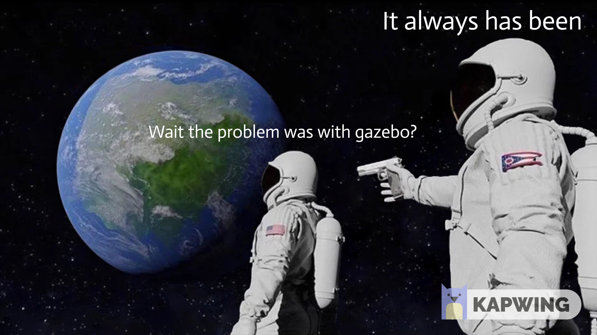
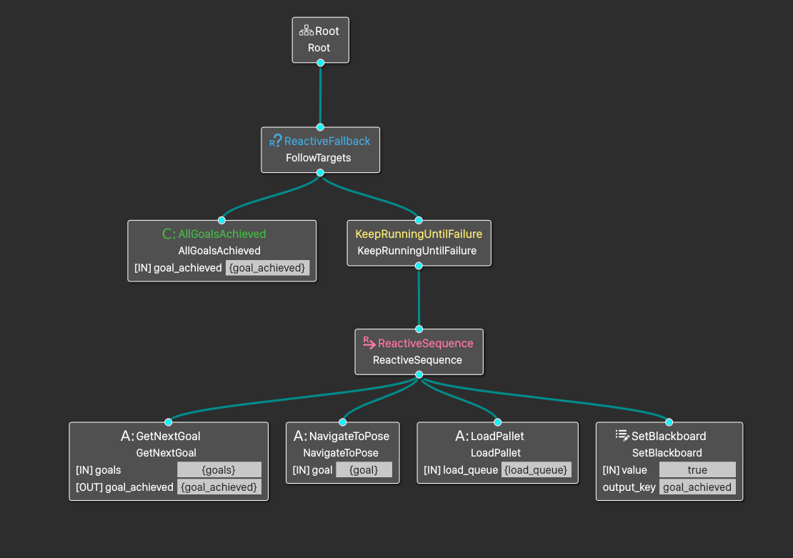

JdeMultibot
Issues Solved:
#1933 Nav2 local_costmap crash issues
#11 Separate Action server for issuing action commands for robot controller
#9 Multi Robot Discussion
Week 12 Blog
After ~12 weeks of non-stop code marathon, we have now arrived at the very last leg of the GSoC journey. The goal of this summer: “To create a multirobot exercise in ROS2” is now almost achieved. This week, we will dive into the nitty gritty details of our code, how ROS2 and Navigation2 are configured and all the things that you need to know before you can start working on solving the exercises. This week’s post will a bit lengthy, so bear with me.
Fixing last week’s problems
After investigating why my simulation was crashing when local costmap was set, I finally found the reason.
The usual suspect: Gazebo 
Gazebo didn’t publish the clock, which made everything useless as use_sim_time was set to true. A quick fix in my config launch file and this was okay. But it didn’t solve everything.
The second problem was the map itself. When robot travelled in our old warehouse world, it always used to travel more than that shown in RViz, which I don’t fully understand why. (My guess: The old map was huge and this might have added a lot of latency between Navigation2 output and response from Gazebo). This meant that it always used to miss the goals/ crash into objects, even with valid costmaps. After considering every option that I had at this time ( we will have a discussion about SLAM and map later in this blog), I went with selecting a completely new world where navigation works quite predictably. One added benefit: This world is actually from amazon! It is the warehouse world from aws, ported and modified by me a bit to suit our purpose. It has some real life warehouse elements to it: Stray piles of boxes, big trays to keep stock etc. It is not perfect, but usable for now.
After tweaking some navigation parameters, everything seemed to work okay-ish. Phew.. Now we have Single and Multi robot exercises in ROS2 almost ready! After finishing up the walkthroughs, they will be published shortly on the Jderobot Academy website. For now, here is a sneak preview of what the warehouse and robot looks like:
Before we rush to try it out, let’s go back to the basics and try to understand how the exercise is structured around.
Single amazon robot package
If we look at our directory structure, we will see following:
.
├── amazon_robot_bringup
├── amazon_robot_controller
├── amazon_robot_description
├── amazon_robot_gazebo
├── amazon_robot_msg
├── amazon_robot_rviz_plugins
├── aws-robomaker-small-warehouse-world
├── docker
├── docker-compose.yaml
├── README.md
└── start_simulation.sh
As we discussed the last time, the amazon_robot_controller is the heart of our operations. But what about other packages?
amazon_robot_bringup holds the startup scripts. We will come back to this later
amazon_robot_description has .urdf files which are used by robot_state_publisher . Robot states are quite important as every link and joint in the robot is described in some relation with other links and joints, ultimately coming back to the base_link .
amazon_robot_gazebo has .sdf models of our robot and also other objects. These files are used by gazebo to simulate a robot, it’s sensors, other objects etc. These files also simulate behaviours, for example actuation behaviour of prismatic joint in our amazon robot. They are quite important if you are creating a robot by yourself but for now, we just have to keep in mind that we are using amazon_robot2 as our model.
amazon_robot_msg are custom ros messages. In our case, this describes the action message FollowTargets that we use to send targets to our robot.
amazon_robot_rviz_plugins are, as the name suggests, rviz plugins which describe our rviz window. We are going to use rviz for setting initial pose, sending goals, sending waypoints and this library handles it.
aws-robomaker-small-warehouse-world is a new addition. When experimenting, we noticed that our old warehouse map model doesn’t give correct results with Navigation2. Hence, we tried to swap it with a brand new world from actual amazon itself. It was released just a month ago and it is quite a faithful representation. We have modified it with our pallets and it is suitable for both: single and multi robot exercise.
docker is for all the docker related files.
Yes, both NVIDIA and Intel are supported. Nvidia guys, just run the following command
xhost +"local:docker@"
sudo docker run -it --rm -e DISPLAY=$DISPLAY -v $XSOCK:$XSOCK -v $HOME/.Xauthority:/root/.Xauthority --privileged --net=host --gpus all amazon_robot_amazon-exercise:latest /bin/bash
Now that we know the overall architecture, I want to explain to you what happens when you launch an exercise using one of the bringup files.
Let’s take an example of amazon_robot_in_aws_world.py file (amazon_robot/amazon_robot_bringup/bringup/launch/amazon_robot_in_aws_world.py ) which we use to launch the single robot exercise:
First few lines are basic imports and declaration of parameters.
import os
from ament_index_python.packages import get_package_share_directory
...
def generate_launch_description():
# Use Simulation time from gazebo
use_sim_time = LaunchConfiguration('use_sim_time', default='true')
# Our bringup location
amazon_gazebo_package_dir = get_package_share_directory('amazon_robot_gazebo')
amazon_gazebo_package_launch_dir= os.path.join(amazon_gazebo_package_dir, 'launch')
amazon_description_dir = get_package_share_directory('amazon_robot_description')
this_launch_dir = os.path.dirname(os.path.realpath(__file__))
....
# Create the launch configuration variables
slam = LaunchConfiguration('slam')
namespace = LaunchConfiguration('namespace')
use_namespace = LaunchConfiguration('use_namespace')
map_yaml_file = LaunchConfiguration('map')
use_sim_time = LaunchConfiguration('use_sim_time')
...
Notice how we are mentioning our own custom packages. Now we come to some important lines
# Map
declare_map_yaml_cmd = DeclareLaunchArgument(
'map',
default_value=os.path.join(amazon_bringup_package_dir, 'maps', 'aws_warehouse' ,'map.yaml'),
description='Full path to map file to load')
This launches our pre made map. This map.yaml / map.pgm file is 2D gridmap representation of our environment. In an unknown environment, we can use SLAm ang generate our own map.
declare_params_file_cmd = DeclareLaunchArgument(
'params_file',
default_value=os.path.join(amazon_bringup_package_dir, 'params', 'nav2_params_with_control.yaml'),
description='Full path to the ROS2 parameters file to use for all launched nodes')
This is our parameter file for navigation2, located at amazon_robot/amazon_robot_bringup/bringup/params/nav2_params_with_control.yaml . It looks something like this
amcl:
ros__parameters:
use_sim_time: True
alpha1: 0.2
alpha2: 0.2
alpha3: 0.2
alpha4: 0.2
alpha5: 0.2
base_frame_id: "base_footprint"
beam_skip_distance: 0.5
beam_skip_error_threshold: 0.9
beam_skip_threshold: 0.3
do_beamskip: false
global_frame_id: "map"
lambda_short: 0.1
...
controller_server:
ros__parameters:
use_sim_time: True
controller_frequency: 20.0
min_x_velocity_threshold: 0.001
min_y_velocity_threshold: 0.5
min_theta_velocity_threshold: 0.001
progress_checker_plugin: "progress_checker"
goal_checker_plugin: "goal_checker"
controller_plugins: ["FollowPath"]
...
robot_controller:
ros__parameters:
use_sim_time: True
controller_bt_xml_filename: "follow_waypoints_and_load.xml"
plugin_lib_names:
- nav2_wait_action_bt_node
- nav2_recovery_node_bt_node
- nav2_navigate_to_pose_action_bt_node
- amazon_robot_get_next_goal_action_bt_node
- amazon_robot_all_goals_achieved_condition_bt_node
- amazon_robot_load_pallet_action_bt_node
This file is basically a representation of all the buttons of various components of the navigation stack that you can tweak. You can set the publish frequency high to update maps faster on the cost of higher compute power or set if either Lidar or 2d Pointcloud is used for creating costmap. For more information, have a look at the navigation2 documentation where the parameters are described quite neatly.
Did you notice the last robot_controller node? That is our own custom robot controller node with it’s own parameters. For example, in multirobot exercise, I send the robot name to the controller using robot_name: "robot2" parameter. It also specifies what behaviour tree is going to be used by our controller. In our case it is follow_waypoints_and_load.xml. So, how does it look like?
The file, located at amazon_robot/amazon_robot_controller/behavior_trees/follow_waypoints_and_load.xml describes how our robot is going to function. We have already discussed how behaviour trees work with nav2, but let’s go through our demo.
<root main_tree_to_execute="MainTree">
<BehaviorTree ID="MainTree">
<ReactiveFallback name="FollowTargets">
<AllGoalsAchieved goal_achieved="{goal_achieved}"/>
<KeepRunningUntilFailure>
<ReactiveSequence>
<GetNextGoal goals="{goals}" goal="{goal}" goal_achieved="{goal_achieved}"/>
<NavigateToPose goal="{goal}" server_name="navigate_to_pose" server_timeout="10"/>
<LoadPallet load_queue="{load_queue}"/>
<SetBlackboard output_key="goal_achieved" value="true"/>
</ReactiveSequence>
</KeepRunningUntilFailure>
</ReactiveFallback>
</BehaviorTree>
</root>
Our main node is FollowTargets, which is also the name of our ros action. FollowTargets runs until our goals are complete. If we open our tree in Groot, it looks like following:

The tree structure is quite explanatory by itself. It follows the execution from left to right. We start executing waypoints one by one. NavigateToPose loads its own subtree to compute path to a pose and navigate to it. Once it reaches at the destination, LoadPallet node is activated and it loads or unloads our lift. We can also edit the BT structure, the way we want. For example, if we need more waiting time, we can add <Wait wait_duration="5"/> to the tags, and so on. More on that in the next blog.
Coming back to our launch script, now we are actually going to launch some nodes
start_gazebo_server_cmd = ExecuteProcess(
condition=IfCondition(use_simulator),
cmd=['gzserver', '--verbose', '-s', 'libgazebo_ros_init.so', '-s' , 'libgazebo_ros_factory.so', '-s' , 'libgazebo_ros_force_system.so' , world],
cwd=[this_launch_dir], output='screen')
The plugins are libgazebo_ros_init.so for initializing clock (Yes! that was the missing part from last week’s exercise), libgazebo_ros_factor.so for spawning robot and libgazebo_ros_force_system.so for applying joint force on our prismatic joint.
After this, make a choice, should we run SLAM or should we run the localization

Well, it is not so straightforward. For our exercise, we are moving things around. And not just some tiny stuff, big pallets which are almost 4 times the size of our robot. Hence, moving will affect our map in a big way. Usually, when we use static maps for localization, the objects in the map are fixed. Hence, if we move something, and it is still represented at it’s old position in the map, the amcl localizer won’t be much happy with this. The particle swarm is much dispersed and we can lose lock on our current position and get thrown away in some random corner of the map. This is exactly what happens sometimes now.
But if we want to use SLAM in ROS2, there is no other reliable package available than SLAM Toolbox. However, currently there are some issues with the LIDAR driver that we are using (rplidar from tb3 😪), so we can’t use that either. So we are stuck using some static map with localization and hope for the best that it works. We go ahead and load up the localization script, which loads the aws world that we described previously.
bringup_cmd = IncludeLaunchDescription(
PythonLaunchDescriptionSource(os.path.join(amazon_bringup_package_dir, 'launch', 'bringup_launch.py')),
launch_arguments={'namespace': namespace,
'use_namespace': use_namespace,
'slam': slam,
'map': map_yaml_file,
'use_sim_time': use_sim_time,
'params_file': params_file,
'default_bt_xml_filename': default_bt_xml_filename,
'autostart': autostart}.items())
Now the only thing left for us to do is spawn our robot! Keep in mind that namespacing and renaming the topics is handled by this script and you have to make sure that we are not duplicating any topics/actions/services when launching two robots
spawn_robot_cmd = IncludeLaunchDescription(
PythonLaunchDescriptionSource(os.path.join(amazon_bringup_package_dir, 'launch',
'spawn_tb3_launch.py')),
condition=IfCondition(spawn_robot),
launch_arguments={
'x_pose': '0',
'y_pose': '0',
'z_pose': '0',
'robot_name': 'amazon_robot'
}.items())
Boom! Soon enough our robots will be yeeted in the warehouse world, ready to be initialized and tasked. In case of multi-robot, two navigation stacks will be launched. You can see more details about how this looks in the last blog! Feel free to explore related scripts and parameters in order to understand more about the system.
Now, because you stuck with me for the entirety of this blog, I have a little surprize for you. Here is the video two robots, in our warehouse, collaborating with each other in a plan (and failing miserably in the end!). But the system is working exactly as it is expected to do.
In the next blog, the exercises will be introduced and will be demonstrated! Until then!
いって来ます!